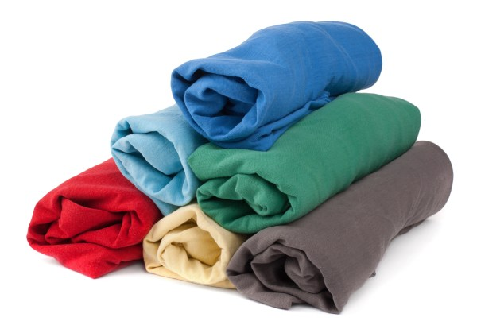
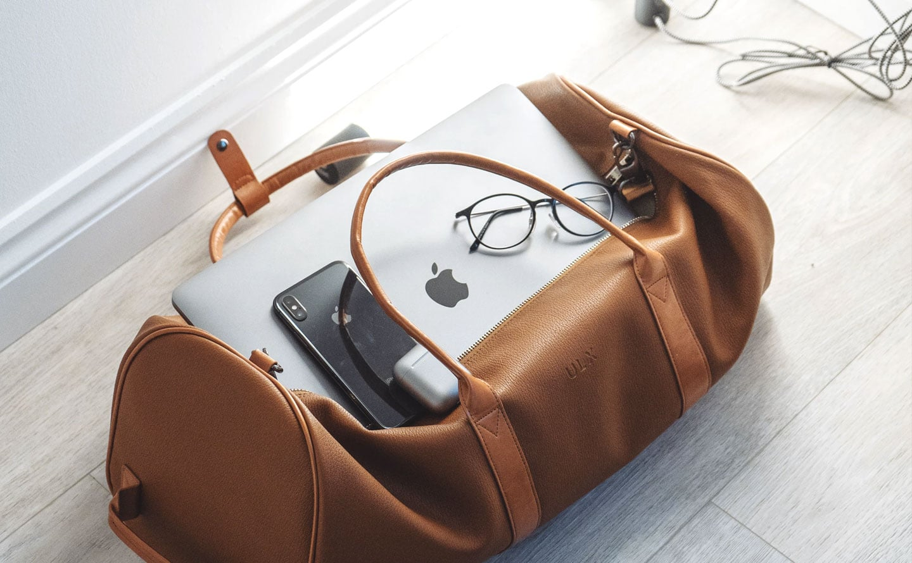

Make A Packing List

When it comes to packing, procrastinators fall short. Start your packing process days or even weeks ahead of your departure date; this gives you time to craft a complete list, plus purchase any additional items you might need for your vacation. Creating a packing list is a fail-safe way to ensure that you never, ever forget to bring something important.
Roll Don't Fold
Many travel experts including backpackers, who must stuff months' worth of clothing into a pack the size of a box of wine agree that rolling is superior to folding. Tightly rolled clothes take up less space than folded ones. Plus, they're less prone to getting deep wrinkles from fold creases.
Never Check Essential Items
It's terribly important to keep your valuable and essential belongings in your carry-on bag, not in your checked luggage. Your passport, identification, money, credit cards, jewelry, electronics, and other valuables should always be brought onto the plane with you. We probably don't need to tell you why you need to keep your passport and wallet on your person. But if the airline loses your luggage (or if a TSA agent gets sticky fingers), you'll regret stowing your expensive watch in a checked bag.
Know Your Airline's Baggage-fee Policy

Figuring out the airlines' tricky and befuddling baggage-fee policies is key to any budget-minded packing strategy. While most airlines permit travelers to check at least one bag on international flights, the majority of U.S. carriers charge big bucks for bags checked on domestic flights. Spirit Airlines—that notoriously customer-unfriendly discounter—even charges as much as $100 for carry-on bags.
Follow The 3-1-1 Rule

What happens if you don't follow the Transportation Security Administration's (TSA) 3-1-1 rule for carry-on luggage? Attempt to bring a large bottle of shampoo or a full-size gel deodorant through the security line and the TSA will likely confiscate your stuff, holding you up in line in the process. So get familiar with the agency's rules: All liquids brought onto planes must be in 3.4-ounce bottles or smaller and inside a single, clear, quart-size zip-top bag
Use Your Personal Items Wisely

It's standard for airlines to permit each traveler to bring one carry-on bag and one personal item onboard planes. This personal item is subject to specific size requirements (these vary by airline), but something like a purse, laptop bag, or backpack is generally acceptable.